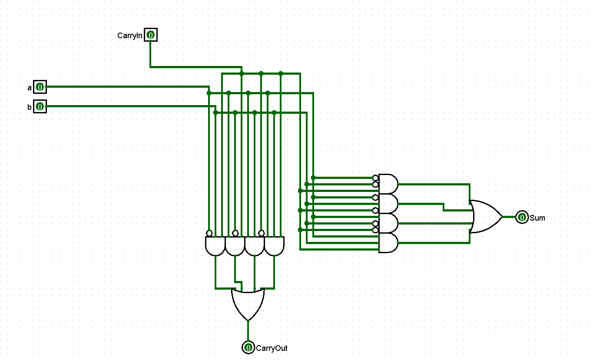

Project 2: Adders
Oefening 1: 1-Bit Full Adder
Het eerste deel van dit project is het maken van een 1-bit full adder. Dit betekent dat we een component gaan maken met twee inputs en 2 outputs, waaronder de binary som en de carry. We gaan na wanneer de som gelijk is aan 1 en wanneer de carry gelijk is aan 1. Met een truth table krijgen we hier snel een overzichtelijke samenvatting van:
Formule:
Uit de truthtabel maakten we volgende booleaanse uitdrukkingen:
Sum = a . b . CarryIn + a . b . CarryIn + a . b . CarryIn
+ a . b . CarryIn
CarryOut = a . b . CarryIn + a . b . CarryIn + a . b . CarryIn + a . b .
CarryIn
Door bovenstaande formules correct te implementeren in het circuit kun je de 1-bit adder correct bouwen.
Circuit:

Oefening 2: 16-bit ripple carry adder
Deze component is niet al te moeilijk als de 1-bit adder werkt. We schakelden 16 van onze 1-bit adders aan elkaar die elk input krijgen van de gesplitte 16-bit inputs en die hun carry's doorgeven.
Oefening 3:
4-bit adder:
Als voorbereiding op de 16-bit CLA maakten we alvast een 4-bit CLA. Een 'Carry Lookahead Adder', afgekort CLA, is een component dat de carries op voorhand berekent. We baseerden ons op de volgende formules om de carry's, (super)propagate en (super)generate te berekenen uit de slides van les over adders:
Daarna restte ons enkel nog de taak om de berekende carry's samen met de inputs om te zetten in een som. We gebruikten exclusive OR's om alle gevallen waarin een som een 1 wordt na te kijken. Door elk maalteken te vertalen naar een AND gate en elke somteken te vertalen naar een OR gate, kwamen we tot het volgende circuit:
Deze 4-Bit CLA doet twee dingen, met name de carries en de sommen berekenen. Om het overzichtelijker te maken en later componenten te kunnen hergebruiken, kunnen ze deze functionaliteiten uit elkaar trekken door een algemene Carry Lookahead Unit te maken. Deze ziet er hetzelfde uit als de CLA die we reeds hebben, maar bevat enkel de berekeningen voor de propagates en generates.
Carry-lookahead Unit:
16-bit adder:
Aangezien we bij deze optelling geen carry moeten berekenen, kunnen we een kortere 1-bit adder gebruiker:
De 16-bit adder wordt uiteindelijk dit:
Oefening 4: Adders Testen
Om te testen of de adders werken, geven we dezelfde input aan de 16-bit ripple adder en de 16-bit CLA.